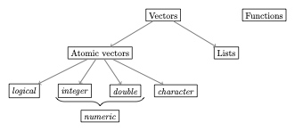

Object Types in R II: Vectors
R
BA
tutorial
A thorough introduction to atomic vectors and lists in R: types (logical, integer, double, character), coercion, logical operations, vectorization, indexing, and useful functions.
1 Video lecture
2 Overview
We already learned that everything in R that exists is an object. You most likely noted that there are different types of objects: 2, for instance, was a number, but assign was a function. As you might have guessed, there are many more types of objects. To understand the fundamental object types in R is an essential prerequisite to master more complicated programming challenges than those we have encountered so far.
These data types are summarized in the following figure:
This tutorial will be about the most common types of vectors. See Object Types in R I: Functions for a treatment of functions, and Object Types in R III: Factors and Data Frames for more advanced types of vectors.
3 Vectors
Vectors are the most important object type in R - almost all data that we will work with in R are vectors of some sort. Within the class of vectors, the most important distinction is that between atomic vectors and lists, which are sometimes also called generic vectors. Both atomic vectors and lists consist of one or more other objects. What distinguishes the two is that while atomic vectors are composed only of objects of the same type, lists can comprise objects of different types.
4 Atomic vectors
This makes it easy to classify atomic vectors in more detail: we usually say that the type of atomic vector is the type of the object it encompasses. Four major types of atomic vectors in this sense exist:
logical(logical values): there are only two relevant logical values:TRUEundFALSEinteger(whole numbers): this type should be self-explanatory. Less intuitive is the rule that in order to define an integer inRyou need to type the number followed by the letterLsuch thatRinterprets the number as an integer. Examples are1L,-400Lor10L.double(decimal numbers): these should be self-explanatory as well. Examples are1.5,0.0, or-500.32.- Whole and decimal numbers are often summarized in the category
numeric. However, the use ofnumericis almost always confusing, and many functions show counter-intuitive behavior when this category is used. It is recommended to never use it. character(words): these can contain all kinds of tokens and are characterized by the fact that they always start and end with"(or'). Examples would be"Hello","500"or"1_2_Three".
As indicated above, an atomic vector only comprises elements of the same type. In this context, we should mention the at first sight ‘strange’ data type NA, which denotes a missing value: whenever an element of a vector is missing, e.g. when the vector is used to store observations of subjects that have participated in an experiment, and for some subjects the observation is missing, we will use NA.
Testing and coercing types
In the following we will study the different types of atomic vectors and their typical behavior in more detail. But before doing so we should introduce the function typeof(): it helps us to identify the type of an object in the first place. To see how, lets call the function with the object (or the name of the object) we are interested about:
Code
typeof(2L)[1] "integer"Code
x <- 22.0
typeof(x)[1] "double"There is also a family of functions that allows us to test whether an object is actually of a certain type or not. The general syntax here is is.*(). For instance:
Code
x <- 1.0
is.integer(x)[1] FALSECode
is.double(x)[1] TRUEThis function always returns an object of type logical:
Code
y <- is.double(x)
typeof(y)[1] "logical"We can also try to transform objects from one type into another. We call this process ‘coercion’ and the general syntax is as.*(). For instance:
Code
x <- "2"
print(
typeof(x)
)[1] "character"Code
x <- as.double(x)
print(
typeof(x)
)[1] "double"Such a transformation is, however, not always possible:
Code
as.double("Hello")[1] NASince R does not know how to turn the word ‘Hello’ into a decimal number, it transforms it into a ‘missing value’ - NA.
For the basic types discussed above there is a logical hierarchy of feasible transformations: logical → integer → double → character, meaning that you can always transform a decimal number into a word, but not vice versa.
Why change the types of objects? Data types are extremely important for a programming language because otherwise it would remain unclear how mathematical operations could be applied to different objects such as numbers or words. You will transform objects yourself especially when you want to use a certain operation that is only defined for a certain type of object, and the object you are dealing with has been stored as a different type. This can happen, for example, when you read in data or translate words into numerical values yourself. If unexpected errors occur in your code with cryptic error messages, it is always a good idea to check the types of the objects used and transform them if necessary.
Code
x <- 2
y <- as.character(x)
print(y)[1] "2"Code
z <- as.double(y) # This works
print(z)[1] 2Code
k <- as.double("Hallo") # This does not work
print(k)[1] NAWhen transforming logical values, TRUE counts as 1 and FALSE as 0, a fact that will come in handy later on:
Code
x <- TRUE
as.integer(x)[1] 1Code
y <- FALSE
as.integer(y)[1] 0Since it is not always clear when R issues a warning for transformations that are incompatible with the hierarchy just introduced and when it does not, you should always be cautious!
Moreover, transformations might change the properties of the transformed objects implicitly in unexpected ways. For instance, a transformation from a decimal number to a whole number can lead to unexpected rounding behavior:
Code
x <- 1.99
as.integer(x)[1] 1Another example is the following:
Code
z <- as.logical(99)
print(z)[1] TRUESuch implicit changes of the object properties do not necessarily come with a warning message, so one should always be careful when transforming objects!
In many cases, functions do the necessary transformations of their arguments automatically. In most cases this is very practical:
Code
x <- 1L # Integer
y <- 2.0 # Double
z <- x + y
typeof(z)[1] "double"But it can be dangerous in some cases as well.
When adding up logical values they are transformed to numbers:
Code
x <- TRUE
y <- FALSE
z <- x + y # TRUE counts as 1, FALSE as 0
print(z)[1] 1This is useful if you want to know, for instance, how many elements of a vector meet a certain logical criterion:
Code
x <- c(1,2,3,4,5)
sum(x > 3)[1] 2In all these cases it is very important to stay informed about the types of objects you are dealing with. To help you out, the following table contains an overview over the most important transformation and test functions:
| Type | Test | Transformation |
|---|---|---|
| logical | is.logical |
as.logical |
| double | is.double |
as.double |
| integer | is.integer |
as.integer |
| character | is.character |
as.character |
| function | is.function |
as.function |
| NA | is.na |
NA |
| NULL | is.null |
as.null |
A final remark on scalars: with scalar we usually refer to ‘single numbers’, such as 2. There is no such concept in R: 2 is a vector with one element (or: of length 1). Thus, we do not distinguish the type of a vector with or more than one elements.
Note: As you might have guessed already, we use the function c() to create longer vectors:
Code
x <- c(1, 2, 3)
x[1] 1 2 3We can also use this function to concatenate vectors:
Code
x <- 1:3 # Shortcut for: x <- c(1, 2, 3)
y <- 4:6
z <- c(x, y)
z[1] 1 2 3 4 5 6Since atomic vectors can only contain objects of the same type, one might expect the following code, which tries to concatenate objects of different types, to produce an error:
Code
x <- c(1, "Hallo")But this is not what happens! R transforms the objects according to the hierarchy discussed above: logical → integer → double → character. Due to the absence of errors or warning messages, such operations are a regular source for mistakes.
Note: The length of a vector corresponds to its number of elements. We can ‘measure’ its length using the function length():
Code
x = c(1, 2, 3)
len_x <- length(x)
len_x[1] 3Logical operations
The logical values TRUE and FALSE are often the result of logical operations, such as ‘Is 2 larger than 1?’. Such logical operations occur very frequently and it is a good idea to familiarize yourself with the logical operators. You can find an overview in the following table:
| Operator | Function in R | Example |
|---|---|---|
| larger | > |
2>1 |
| smaller | < |
2<4 |
| equal | == |
4==3 |
| larger or equal | >= |
8>=8 |
| smaller or equal | <= |
5<=9 |
| not equal | != |
4!=5 |
| and | & |
x<90 & x>55 |
| or | | |
x<90 | x>55 |
| either or | xor() |
xor(2<1, 2>1) |
| not | ! |
!(x==2) |
| is true | isTRUE() |
isTRUE(1>2) |
The result of such logical operations is always a logical value:
Code
x <- 4
y <- x == 8
typeof(y)[1] "logical"You may also test longer vectors:
Code
x <- 1:3
x<2[1] TRUE FALSE FALSETests can also be chained:
Code
x <- 1L
x>2 | x<2 & (is.double(x) & x!=0)[1] FALSESince many mathematical operations interpret TRUE as 1, it is easy to check how often a certain condition is met:
Code
x <- 1:50
smaller_20 <- x<20
print(
sum(smaller_20) # How many elements are smaller than 20?
)[1] 19Code
print(
sum(smaller_20/length(x)) # What's the share of these elements?
)[1] 0.38Vectorization
The chained operation we just saw is an example for vectorizing an operation. This means that the same operation is applied to many elements, all of which are concatenated as a vector. For instance, if you want to compute the square root of the numbers 5, 6 and 7 you could do:
Code
sqrt(5)[1] 2.236068Code
sqrt(6)[1] 2.44949Code
sqrt(7)[1] 2.645751Or you vectorize the operation:
Code
sqrt(c(5,6,7))[1] 2.236068 2.449490 2.645751Vectorizing operations is very useful since it speeds up the computations considerably. Vectorized operations are far more efficient and faster than applying the operation to each element of the vector separately. Thus, whenever you need to apply a certain operation more than once you should always think about using vectorization.
More on words
Words are distinguished by the fact that their beginning and their end gets indicated by the symbol ' or ":
Code
x <- "Hello"
typeof(x)[1] "character"Code
y <- 'Bye!'
typeof(y)[1] "character"Just as other kinds of atomic vectors, they can be concatenated using c():
Code
z <- c(x, "und", y)
z[1] "Hello" "und" "Bye!" A useful function in this context is paste(), which transforms and combines elements of several vectors:
Code
x <- 1:10
y <- paste("Try nb.", x)
y [1] "Try nb. 1" "Try nb. 2" "Try nb. 3" "Try nb. 4" "Try nb. 5"
[6] "Try nb. 6" "Try nb. 7" "Try nb. 8" "Try nb. 9" "Try nb. 10"The function paste() also accepts an optional argument sep, which allows us to specify a token that should be placed between the elements to be combined (the default is sep=" "):
Code
day_nr <- 1:10
x_axis <- paste("Day", day_nr, sep = ": ")
x_axis [1] "Day: 1" "Day: 2" "Day: 3" "Day: 4" "Day: 5" "Day: 6" "Day: 7"
[8] "Day: 8" "Day: 9" "Day: 10"Missing values and NULL
As indicated above, missing values are encoded as NA. This is particularly useful in statistical contexts, where a particular element of a vector cannot simply be removed if it is unavailable.
Most operations that get NA as an input will also give NA as an output, because it is unclear what the result of the operation would be for different values for the missing value:
Code
5 + NA[1] NAThe only exception is an operation that yields a certain value completely independent from what you would substitute for NA:
Code
NA | TRUE # Always TRUE, no matter what you substitute for NA[1] TRUETo test whether a vector x contains missing values you should always use the function is.na, never x==NA:
Code
x <- c(NA, 5, NA, 10)
print(x == NA) # Unclear since not clear whether all NA must stand for the same value[1] NA NA NA NACode
print(
is.na(x)
)[1] TRUE FALSE TRUE FALSEWhenever an operation yields a value that cannot be defined, the result is not NA but NaN (not a number):
Code
0 / 0[1] NaNAnother special element is NULL. NULL is in fact a data type in itself (i.e. it is not a vector), but in practice it is best thought of as a vector of length zero:
Code
x <- NULL
length(x)[1] 0NULL is frequently used to indicate that something does not exist. An empty vector, for instance, is NULL:
Code
x <- c()
xNULLCode
length(x)[1] 0This is different to a vector with one (or more) missing elements:
Code
y <- NA
length(y)[1] 1When you define your own functions, you might use NULL as the default value for optional arguments.
Indexing and replacement
We can extract single elements of a vector using squared brackets:
Code
x <- c(2,4,6)
x[1][1] 2This also allows us to modify specific elements:
Code
x <- c(2,4,6)
x[2] <- 99
x[1] 2 99 6But we can also extract more than one element:
Code
x[1:2][1] 2 99Negative indices eliminate the respective elements:
Code
x[-1][1] 99 6To get the last element of a vector you might combine this idea with the function length():
Code
x[length(x)][1] 6Useful functions when working with atomic vectors
A sequence of whole numbers is something that we use very frequently. To create such sequences, the shortcut : comes in handy:
Code
x <- 1:10
x [1] 1 2 3 4 5 6 7 8 9 10Code
y <- 10:1
y [1] 10 9 8 7 6 5 4 3 2 1To build more complex sequences we can use seq(), which in its simplest case is equivalent to ::
Code
x <- seq(1, 10)
print(x) [1] 1 2 3 4 5 6 7 8 9 10The function seq(), however, allows for a number of useful optional arguments. For instance, by allows us to control the space between the numbers:
Code
y <- seq(1, 10, by = 0.5)
print(y) [1] 1.0 1.5 2.0 2.5 3.0 3.5 4.0 4.5 5.0 5.5 6.0 6.5 7.0 7.5 8.0
[16] 8.5 9.0 9.5 10.0If we want to specify the desired length of the resulting vector and let R choose the necessary space between the elements, we may use length.out:
Code
z <- seq(2, 8, length.out = 4)
print(z)[1] 2 4 6 8Another common task is to repeat a certain vector. This can be done with rep():
Code
x <- rep(NA, 5)
print(x)[1] NA NA NA NA NAFor the length of a vector we can use the function length():
Code
x <- c(1,2,3,4)
length(x)[1] 4If we are looking for the largest and smallest value of a vector we can use min() and max():
Code
min(x)[1] 1Code
max(x)[1] 4Both functions (and many more similar functions) have the optional argument na.rm, which can be either TRUE or FALSE. In the case of TRUE, all NA values are removed before the operation gets applied:
Code
y <- c(1,2,3,4,NA)
min(y)[1] NACode
min(y, na.rm = TRUE)[1] 1The mean or the variance/standard deviation of the elements can be computed with mean(), var(), and sd(), all of which have also the optional argument na.rm:
Code
mean(x)[1] 2.5Code
var(y)[1] NACode
var(y, na.rm = T)[1] 1.666667Finally, we often want to compute the sum or the product of all the elements of the vector. Here the functions sum() and prod() are useful:
Code
sum(x)[1] 10Code
prod(y, na.rm = T)[1] 245 Lists
In contrast to atomic vectors, lists can contain objects of different types. We create lists via the function list():
Code
l_1 <- list(
"a",
c(1,2,3),
FALSE
)
typeof(l_1)[1] "list"Code
l_1[[1]]
[1] "a"
[[2]]
[1] 1 2 3
[[3]]
[1] FALSELists can become very complex. The function str() (short for “structure”) helps us to get a quick overview over a list and its elements:
Code
str(l_1)List of 3
$ : chr "a"
$ : num [1:3] 1 2 3
$ : logi FALSEWe can name the elements of lists:
Code
l_2 <- list(
"first_element" = "a",
"second_element" = c(1,2,3),
"third_element" = FALSE
)We can retrieve the names of all elements of the list with names():
Code
names(l_2)[1] "first_element" "second_element" "third_element" There are two very important differences in the handling of vectors and lists:
- Vectorization does not work for lists
- Indexing works differently
The first issue can be illustrated easily:
Code
vec_expl <- c(1,2,3)
list_expl <- list(1,2,3)
sqrt(vec_expl)[1] 1.000000 1.414214 1.732051But:
Code
sqrt(list_expl)Error in `sqrt()`:
! non-numeric argument to mathematical functionThe second issue is due to the more complex structure of lists. For vectors we extracted single elements via [. For lists, there is a difference between [ and [[. The former always returns a list:
Code
l_1[2][[1]]
[1] 1 2 3The second then returns a vector and is more similar to the behavior of [ in the context of atomic vectors:
Code
l_1[[2]][1] 1 2 3To extract an element of this vector we can chain the brackets:
Code
l_1[[2]][3][1] 3We can also extract elements by their name:
Code
l_2[[1]][1] "a"Code
l_2[["first_element"]][1] "a"Lists are fundamental to many more complex structures that we will encounter later. They are more flexible than atomic vectors, but this flexibility also makes them more difficult to use and less efficient for tasks where this flexibility is not needed. As a rule of thumb, whenever you can represent something as an atomic vector, you should do so. You should always have a good reason for using lists!
6 Practice
The ObjectTypes1 exercise set in the DataScienceExercises package covers the main concepts from this tutorial:
Code
learnr::run_tutorial(
name = "ObjectTypes1",
package = "DataScienceExercises",
shiny_args = list("launch.browser" = TRUE)
)See the blog post on DataScienceExercises for installation instructions.
7 Further reading
- Sections 1-3 in Chapter 12 of R for Data Science
- Chapter 13 in R for Data Science
- Chapter 14 in R for Data Science
Citation
BibTeX citation:
@misc{gräbner-radkowitsch2026,
author = {Gräbner-Radkowitsch, Claudius},
editor = {Gräbner-Radkowitsch, Claudius},
title = {Object {Types} in {R} {II:} {Vectors}},
date = {2026-06-16},
url = {https://euf-methodology-hub.netlify.app/resources/r-programming/r-object-types-ii-vectors},
langid = {en}
}
For attribution, please cite this work as:
Gräbner-Radkowitsch, Claudius. 2026. “Object Types in R II:
Vectors.” In Methods Hub, edited by Claudius
Gräbner-Radkowitsch. June 16. https://euf-methodology-hub.netlify.app/resources/r-programming/r-object-types-ii-vectors.